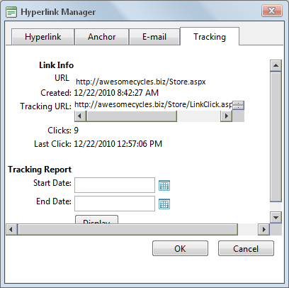
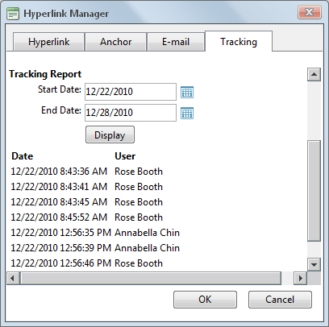

Viewing Link Tracking Report
How to view tracking information for a tracked link within the TelerikEditorProvider RTE. In additional the tracking report displays data for the selected date range.
- Select the linked text or object and then click the Hyperlink Manager (CTRL + K)
 button - OR - Right-click on the linked item and select Properties... from the drop down list. This opens the Hyperlink Manager with the Hyperlink tab selected.
button - OR - Right-click on the linked item and select Properties... from the drop down list. This opens the Hyperlink Manager with the Hyperlink tab selected.
- Select the Tracking tab.
- In the Link Info section, the following information is displayed:
- URL: The URL for this link. E.g. http://awesomecycles.biz/Store.aspx
- Created: The date this link was created. 12/22/2010 8:42:27 AM
- Tracking URL: The tracking URL for this link. E.g. http://awesomecycles.biz/LinkClick.aspx?link=63&tabid=41&mid=386
- Clicks: The number of times this link has been clicked.
- Last Click: The date and time when the link was last clicked.

- In the Tracking Report section, complete the following to view the report:
- At Start Date, click the Calendar
 button. This displays the current month with today's date highlighted. Select a new date if required. See "Working with the Calendar"
button. This displays the current month with today's date highlighted. Select a new date if required. See "Working with the Calendar"
- At End Date, click the Calendar button. This displays the current month with today's date highlighted. Select a new date if required.
- Click the Display button. This displays the date and time when the link was clicked and the first and last name of authenticated users.

- Click the Cancel button to close the Hyperlink Manager.